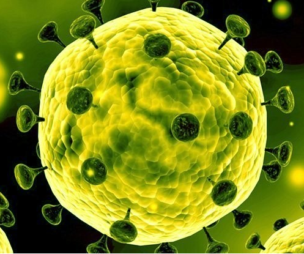
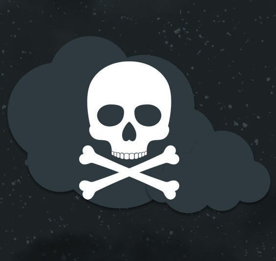
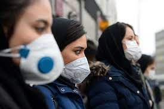
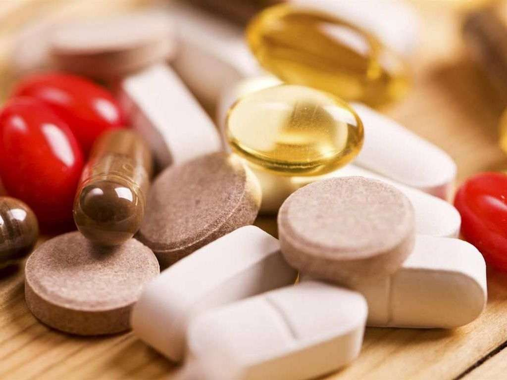

کرونا
کرونا چیست؟
کرونا به خانوادهای از ویروسها گفته میشود که شامل چند عضو میباشند. خانواده کرونا یک خانواده جدید نیست و از گذشته اعضای این خانواده سبب بیماریهای مختلف تنفسی شدهاند از جمله سرما خوردگی ساده، بیماری تنفسی حاد شدید و بیماری تنفسی خاورمیانهای که به ترتیب توسط ویروس کرونای سرماخوردگی، ویروس کرونای سارس (SARS_COV) و ویروس کرونای مرس (MERS_COV) ایجاد میشوند. بیماری کرونا که در حال حاضر شیوع یافته است یک عضو جدید از این خانواده است که قبلاً در انسان دیده نشده بود. این ویروس، کرونای جدید 2019 و یا nCOV-2019 نام گرفته است و سبب بیماری کووید 19 (COVID-19) میشود.
ویروس کرونای جدید NCOV-2019 از کجا آمده است؟
این ویروس در اواخر سال 2019 در یکی از شهرهای چین برای اولین بار در انسان یافت شد و چون یک ویروس جدید و مربوط به سال 2019 بود ویروس کرونای سال 2019 نام گرفته شد. ظاهراً این ویروس از خفاشها به یک جانور دیگر به نام مورچهخوار پولکدار (PANGOLIN) و از آن طریق به انسان منتقل شده است.
بیماری COVID-19 چگونه خود را نشان میدهد؟
اگرچه به دلیل جدید بودن این ویروس، اطلاعات دقیق و کامل در اختیار نیست، ولی تا به حال این بیماری خود را بهصورت علائم تنفسی نشان داده است. سه علامت اصلی عبارتاند از سرفه خشک، تب و تنگی نفس. در 80 درصد موارد علائم خفیف هستند (سرفه یا تب) که تب میتواند بسیار خفیف یا شدید باشد. در 20 درصد موارد علائم شدید بهصورت تنگی نفس شدید و یا بیماری تنفسی حاد شدید (ARDS) خود را نشان میدهد که میتواند در برخی موارد به مرگ منجر شود. بیماری کووید 19 بهندرت (5%) خود را بهصورت علائم آبریزش بینی، عطسه و یا گلودرد نشان میدهد.
اینکه چه کسانی دچار فرم شدیدتر بیماری میشوند بستگی به چند عامل دارد که مهمترین آن سیستم ایمنی فرد است. افرادی که یک بیماری زمینهای دارند مانند ناراحتی قلبی، ناراحتی ریوی، فشار خون و یا دیابت بیشتر در معرض نوع شدید بیماری کووید 19 هستند.
ویروس کرونای جدید تا حد قابلیت مرگ زایی دارد؟
این بیماری یک پدیده جدید است و در حال حاضر نمیتوانیم بهطور قطعی نظری در مورد کشندگی این بیماری بدهیم ولی آمارها نشان داده است در حد 2 درصد باشد ولی بنا بر اعلام WHO(سازمان بهداشت جهانی) این عدد میتواند تغییر کند.
از زمانی که ویروس وارد بدن میشود چه مدت طول میکشد که علائم بیماری ظاهر شود؟
حدود 2 روز تا 2 هفته. البته 1 روز تا 24 روز نیز گزارش شده است.
کرونا چگونه منتقل میشود؟
راه انتقال ویروس کرونای جدید از طریق قطرههای تنفسی است (Respiratory Droplets) این قطرهها از طریق عطسه، سرفه و یا صحبت کردن در هوا بخش میشوند و چون وزن سنگینی دارند در هوا نمیتوانند معلق بمانند بلکه بر روی اجسام و یا اشخاصی که در فاصلهی نزدیک یعنی در فاصلهی 1 یا 2 متری آنها باشند مینشینند و آنها را آلوده میکنند پس راههای انتقال به این صورت است:
اگر در فاصلهی 1 یا 2 متری از شخص مبتلا ایستاده باشید و با او صحبت کنید و یا در صورت شما عطسه یا سرفه کند.
تماس مستقیم اگر با شخصی که مبتلا است دست بدهید و بعد دست آلوده خود را بهصورت بزنید. اگر دست به اجسام آلوده بزنید که قبلاً توسط ترشحات عطسه یا سرفه فرد بیمار آلوده شده باشند به هر دلیلی اگر دست شما آلوده شود از طریق اجسام آلوده یا از طریق شخص آلوده و بعد شما دست خود را به قسمت T-Zone صورت خود که شامل ناحیه چشم، دهان، بینی شود بزنید میتوانید این ویروس را وارد بدن خود کنید.
سؤال: چه مدت این ویروس میتواند بر روی اجسام زنده بماند؟ جواب: در حال حاضر دقیقاً مشخص نیست ولی این زمان میتواند از چند ساعت تا چند روز باشد.
آیا حیوانات میتوانند ناقل بیماری باشند؟
تحقیقات در حال بررسی هستند و هنوز مشخص نشده است که آیا این ویروس میتواند از طریق تماس با حیوانات منتقل شود یا نه ولی با توجه به سیری که تاکنون ویروس داشته است و تاریخچه آن احتمال میرود که حیواناتی که خانگی نیستند ممکن است باعث انتقال ویروس شوند.
آیا این ویروس از راه مدفوع منتقل میشود؟
در حال حاضر انتقال بیماری از طریق تماس با مدفوع گزارش نشده است ولی ویروس در داخل مدفوع یافت شده است.
چگونه میتوان بیماری کووید 19 (COVID-19) تشخیص قطعی داد؟
بیماری COVID را با گرفتن نمونه از ترشحات ته حلق و یا خلط میتوان تشخیص داد. پس نمونههایی که مشکوک هستند، با توجه به علائم و سابقهی تماس با افراد مبتلا، برای تشخیص قطعی به مراکزی که کیت تشخیص بیماری را دارند ارجاع میدهند. کیت تشخیصی یک تست بیدرد است. این ترشحات برای تست به آزمایشگاههایی که مجهز هستند فرستاده میشوند و اگر 2 تست مثبت به دست بیاید به منزله تشخیص قطعی است.
پیشگیری از کرونا ویروس
مؤثرترین راه برای جلوگیری از ابتلا به این ویروس شستن مکرر دستها و اجتناب از تماس با چشم، دهان، بینی با دستهای آلوده است.
شستن دستها با آب گرم و صابون. در صورتی که آب گرم و صابون در اختیار ندارید میتوانید از محلول ضد عفونی کنندهای که الکل بیشتر از 60 درصد دارد استفاده کنید لطفاً توجه کنید که برای شستن دستها حتماً از روش شستن صحیح استفاده شود و حداقل به مدت 20 ثانیه دستها بهطور کامل از جمله زیر ناخنها و تمام کنارهها و گوشههای دست شست
عدم نزدیک شدن به افرادی که علامت دار هستند. فاصلهی نزدیک در این مورد منظورمان یعنی فاصلهی 1 یا 2 متری پس از هر فردی که علائم دارد فاصله بگیرند.
عدم استفاده از وسایل غذاخوری افراد دارای علائم
عدم استفاده از حوله صورت بقیه افراد خانواده پس ترجیحاً حوله خود را از افراد خانواده جدا کنید حتی اگر دارای علائم نیستند.
اگرچه همان طور که قبلاً گفته شد هنوز قطعی نشده است که آیا این بیماری از طریق حیوان به انسان منتقل میشود یا خیر ولی سازمان بهداشت جهانی توصیه میکند تا زمانی که به نتیجه قطعی برسیم از تماس با حیوانات غیر خانگی خودداری کنید. همچنین پس از تماس با گوشت خام حتماً دست خود را بشویید.
سعی کنید در مکانهایی که با دیگر افراد هستید و در و پنجرهها بسته است هرچند وقت یکبار در و پنجرهها را بازکنید تا هوا تهویه شود.
آیا افرادی که در دوره نهفته بیماری هستند واگیردارند؟ (دوره نهفته یعنی زمانی که ویروس وارد بدن شده است اما هنوز علائمی بروز نداده است که این دو
هنوز در مورد اینکه این افراد مسری هستند یا نه نظر قطعی نمیتوان داد. (سازمان بهداشت جهانی و مرکز کنترل و پیشگیری بیماریها)
استفاده از ماسک: آیا استفاده از ماسک مفید است و چه نوع ماسکی باید استفاده شود؟ سازمان بهداشت جهانی (WHO) پوشیدن ماسک را برای همه توصیه نمیکند. پس پوشیدن ماسک برای چه کسی توصیه میشود؟ در سه مورد زیر:
افرادی که در کادر درمانی هستند و خدمات درمانی به بیماران ارائه میدهند و در فاصلهی نزدیک با آنها قرار دارند.
کسانی که از افرادی که دارای علائم هستند نگه داری میکنند و یا با آنها زندگی میکنند
افرادی که علائم بیماری تنفسی دارند.
چه نوع ماسکی استفاده شود؟ ماسک ساده جراحی
آیا استفاده از ماسک مخصوص N95 برای همهی این افراد توصیه میشود؟ خیر
آیا ماسک بهتنهایی کافی است؟ خیر. سازمان بهداشت جهانی (WHO) تأکید میکند که ماسک بهتنهایی کافی نیست و باید توصیههای پیشگیرانه قبلی ذکر شده هم با آن همراه باشد بهخصوص بر روی شستن دستها تأکید میشود.
روش صحیح سرفه کردن: در هنگام سرفه کردن در داخل دستها سرفه نکنید و در داخل آستین لباس عطسه یا سرفه کنید. اگر داخل دستمال عطسه یا سرفه کردید حتماً یکبار مصرف باشد و دستمال خود را بعداً دور بیندازید و در جیب یا کیف خود حمل نکنید.
تا جایی که میتوانید در خانه بمانید و در جاهایی که ازدحام جمعیت است مانند کنسرت، جلسات، همایشها تا جایی که امکانش هست خودداری فرمایید.
به سیستم ایمنی خود توجه کنید. استراحت خوب و گذراندن وقت با خانواده و افرادی که به شما حس خوب میدهند و سعی کنید مواردی که باعث استرسهای غیر لازم میشوند و کاری در مورد آنها نمیتوانیم بکنیم زیاد فکر نکنید. تغذیه مناسب، آب زیاد، سبزیها و میوهها اینها عوامل بسیار مهمی هستند که به تقویت سیستم ایمنی بدن شما کمک میکنند.
در مورد پیشگیری منظورمان یک حس مسئولت پذیری هم هست که میخواهیم پیشگیری کنیم که نه تنها خودمان بیمار نشویم بلکه دیگران را هم بیمار نکنیم. پس به تمام نکات ذکر شده فوق توجه کنید تا جامعه سالمتری داشته باشیم.
توجه کنید که نکات پیشگیرانه ذکر شده اگرچه بهظاهر ساده و بدوی به نظر میرسند ولی فوقالعاده مؤثر هستند.
درمان بیماری کووید 19 (کروناویروس)
در حال حاضر هیچ درمان قطعی برای این بیماری پیدا نشده است اگرچه تحقیقات زیادی در بسیاری از کشورها از جمله چین در حال انجام است هم از جهت دارویی و هم از جهت واکسن. درمانی که در حال حاضر ارائه میشود بسته به نوع شدت بیماری میتواند یک درمان علائمی – حمایتی باشد و یا در موارد شدید داروهایی بهطور تجربی در حال استفاده هستند. ولی ما منتظر پیشرفتهای بیشتر در زمینههای دارویی هستیم و امیدواریم.